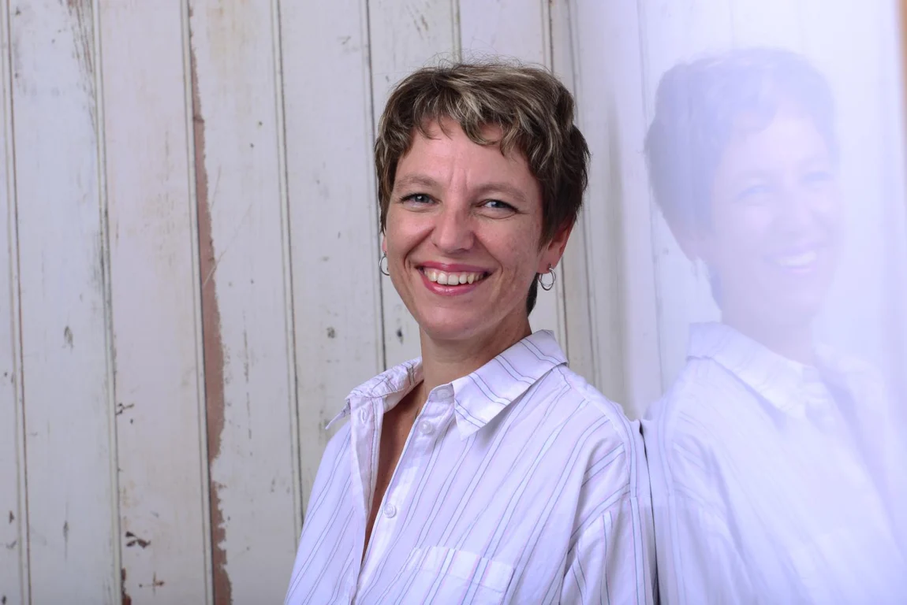
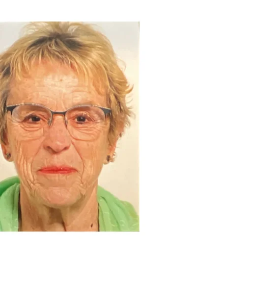

✉ Kontakt
Fragen, Wünsche oder Anregungen? Schreiben Sie uns.
Kontaktformular →Der Ortsverein für Radeberg, Ottendorf-Okrilla, Wachau und Arnsdorf – mit Informationen über unsere Arbeit, Veranstaltungen und Ansprechpersonen.
Fragen, Wünsche oder Anregungen? Schreiben Sie uns.
Kontaktformular →Informationen zu Beteiligung und Spenden an den Ortsverein.
Mehr erfahren →Interesse an einer Mitgliedschaft?
SPD-Mitglied werden ↗Wir planen für 2027 eine gemeinsame Exkursion in den Sächsischen Landtag. Interessierte können sich unverbindlich vormerken lassen.
Für Teilnahme vormerken →„Unsere Region verdient eine sichtbarere sozialdemokratische Kraft. Wir wollen die politische Stimme für alle sein, die sich eine soziale, demokratische, moderne und offene Politik im Radeberger Land wünschen.“
Toni GüttnerVorsitzender
Neuigkeiten und Ankündigungen aus dem Ortsverein finden Sie auf unserem WhatsApp-Kanal sowie bei Instagram und Facebook.
Zum SPD-Ortsverein Radeberger Land gehören die Stadt Radeberg und die Gemeinden Ottendorf-Okrilla, Wachau und Arnsdorf mit ihren Ortsteilen.
Alle Gemeinden der Übersicht sind anklickbar und führen zu ihrem offiziellen Internetauftritt.
Schematische Orientierungskarte (nicht maßstabsgetreu). Die Ortsnamen verlinken zu den Gemeindewebsites.
Die Mitglieder des Vorstands des SPD-Ortsvereins Radeberger Land.
Vorsitzender
Jurist · Schwerpunkte: Wirtschafts-, Rechts- und Sicherheitspolitik.
Geboren in Dresden. Sein politisches Leitmotiv ist eine soziale, demokratische, moderne und offene Politik im Radeberger Land.
Stellvertretende Vorsitzende
Kassierer
Luftverkehrsingenieur · Schwerpunkte: soziale Finanzpolitik, Chancengleichheit und Bildung.
SPD-Mitglied seit 2014; engagierte sich unter anderem im Kreisvorstand Bautzen und als Ortsvereinsvorsitzender in Dresden-Leuben.

Beisitzerin (Neumitgliederbeauftragte)
Fachärztin für Psychiatrie · Schwerpunkte: Gesundheit, Familien und Umweltschutz.
Leitmotiv: Artikel 1 des Grundgesetzes – die Würde des Menschen ist unantastbar.
Beisitzer

Beisitzerin
Ansprechpersonen aus der Kommunal-, Landes- und Bundespolitik.
Stadtrat Radeberg
stadtrat@spdradeberg.de ↗Kreistag Bautzen
Oberbürgermeister der Stadt Radeberg von 1994 bis 2022.
Sächsischer Landtag
Deutscher Bundestag
Auswahl der SPD-Ministerinnen und -Minister, Stand Oktober 2026. Änderungen vorbehalten.
Petra Köpping
Soziales, Gesundheit und Gesellschaftlicher Zusammenhalt
Dirk Panter
Wirtschaft, Arbeit, Energie und Klimaschutz
Lars Klingbeil · Finanzen
Boris Pistorius · Verteidigung
Stefanie Hubig · Justiz und Verbraucherschutz
Alexander Schweitzer · Arbeit und Soziales
Carsten Schneider · Umwelt
Reem Alabali-Radovan · Entwicklungszusammenarbeit
Verena Hubertz · Wohnen, Stadtentwicklung und Bauwesen
Offizielle Kabinettsübersicht ↗Welche Themen, Wünsche und Anliegen beschäftigen Sie in Radeberg, Ottendorf-Okrilla, Wachau oder Arnsdorf? Teilen Sie uns Ihre Fragen und Anregungen mit.
Wir möchten Hinweise aus unserer Region aufnehmen und mit Interessierten ins Gespräch kommen. Schreiben Sie uns, welche Themen Ihnen wichtig sind.
Anliegen mitteilen →Informieren Sie sich über Mitgliedschaft, Mitarbeit und Möglichkeiten, die Arbeit des Ortsvereins zu unterstützen.
Überweisen Sie eine Spende direkt an den SPD-Ortsverein Radeberger Land.
Bankverbindung und Überweisungs-QR-Code ↓Empfänger: SPD OV Radeberger Land
IBAN: DE71 8509 5004 7461 5810 00
Verwendungszweck: Spende SPD OV Radeberger Land
Sie können den Betrag ändern oder das Feld freilassen. Der Code wird sofort neu erzeugt.
In der Banking-App als Überweisungs-QR-Code (GiroCode) scannen. Bitte Empfänger, IBAN und Betrag vor der Freigabe kontrollieren.
Schreiben Sie uns, wenn Sie Fragen, Ideen oder Anliegen haben.
E-Mail:
info@spdradeberg.de
SPD-Ortsverein Radeberger Land
c/o SPD-Landesverband Sachsen, Regionalgeschäftsstelle
Devrientstraße 7 · 01067 Dresden
Telefon: +49 351 4335632
Beim Kontaktformular werden die übermittelten Angaben durch den externen Dienst FormSubmit verarbeitet. Bitte keine besonders sensiblen Daten einsenden.
Angaben gemäß § 5 DDG
Sozialdemokratische Partei Deutschlands (SPD)
SPD-Ortsverein Radeberger Land
Vertreten durch den Vorsitzenden Toni Güttner
c/o SPD-Landesverband Sachsen, Regionalgeschäftsstelle
Devrientstraße 7
01067 Dresden
Telefon: +49 351 4335632
E-Mail: info@spdradeberg.de
Toni Güttner, Anschrift wie oben.
Fotos: privat, soweit nicht anders gekennzeichnet.
SPD-Ortsverein Radeberger Land, vertreten durch den Vorsitzenden Toni Güttner, Devrientstraße 7, 01067 Dresden; info@spdradeberg.de.
Diese Website wird über GitHub Pages bereitgestellt. Beim Aufruf einer Website werden technisch erforderliche Verbindungsdaten, insbesondere IP-Adresse und Informationen zum Browser, durch den Hostinganbieter verarbeitet. Die Verarbeitung erfolgt zur Bereitstellung und Sicherheit der Website (Art. 6 Abs. 1 lit. f DSGVO). Weitere Angaben zur Datenverarbeitung finden Sie in den Datenschutzinformationen von GitHub.
Bei Nutzung des Formulars werden die eingegebenen Namen, E-Mail-Adressen und Nachrichteninhalte an den externen Dienst FormSubmit übermittelt und zur Zustellung an den Ortsverein verarbeitet. Es kann dabei zu einer Verarbeitung außerhalb der EU kommen. Informationen zum Dienst finden Sie unter FormSubmit Datenschutz. Alternativ ist die Kontaktaufnahme per E-Mail möglich.
Unter den gesetzlichen Voraussetzungen bestehen Rechte auf Auskunft, Berichtigung, Löschung, Einschränkung der Verarbeitung, Datenübertragbarkeit und Widerspruch sowie das Recht auf Beschwerde bei einer zuständigen Datenschutzaufsichtsbehörde.
Datenschutzkontakt der SPD Sachsen: datenschutz-sachsen@spd.de.